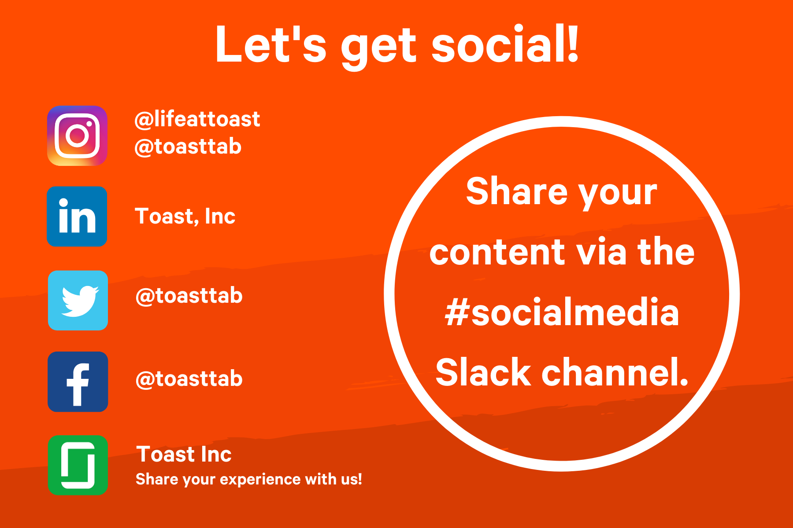
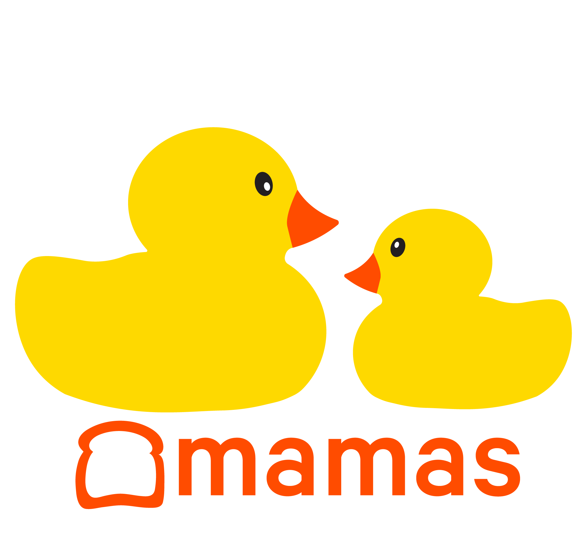

Graphic Design - Branding - Social Media
Toast Internship
Voter allows you to plan out your ballot for upcoming local, state, and federal elections based on the things important to you.
From January to April 2020, I co-oped at Toast, a restaurant software company, in the employer brand department, designing for social media and various internal projects. In addition, I helped my manager, Natalie Audelo, run Toast's company culture focused Instagram, @lifeattoast.
Toasty Takeover Instagram Campaign
In March, I led a campaign for @lifeattoast centered around the employee experience. Each week, a new Toast employee posted content from throughout their day on the @lifeattoast Instagram story, demonstrating their day to day and perspective in thier role. The takeovers were planned to be expanded to cover company events, holidays, and more before COVID-19 began. The initial two takeovers, the first being hosted by myself, saw a follower growth of 75 users and over 2000 views, with around 70% of people watching the entire takeover. The project required social media advertisement and project management skills to ensure future hosts were aligned on what types of content to post.
Social Media Marketing Assets



Branding for Internal Toast DEI Groups
While on co-op, I collaborated with five of Toast's internal DEI (Diversity Equity Inclusion) organizations on branding projects. For Toast Mamas and Parents, I created logos to help visually represent their mission and identity. For the other three of the groups, I designed LinkedIn banners for their members to use on their personal profiles to spread their organization's message.

Final Toast Mamas Logo

Alternate Toast Mamas Logo

Final Toast Parents Logo
LinkedIn DEI Group LinkedIn Profile Banners


Company Values Icons
At the start of my co-op, I worked on icons with Toast designer, MC Nealon, and Employer Brand Manager, Natalie Audelo, for the company's refreshed set of values. We wanted to center the icons around food because restaurants are the life-blood of the company. In addition, I designed a LinkedIn banner for Toast employees to use on their personal profiles and an updated Glassdoor banner for the company page.
Final Icons
Always Be Hungry
Lead with Humility
One Team
Full Color Icons
Always Be Hungry
Lead with Humility
One Team
LinkedIn Employee Profile Values Banner

Glassdoor Company Profile Values Banner

Photo Booth Props
At each new hire orientation, Toast has a photobooth for employees to document their first memories with the company. I designed props for people to play with in the photobooth to add some extra Toast branding to the photos.